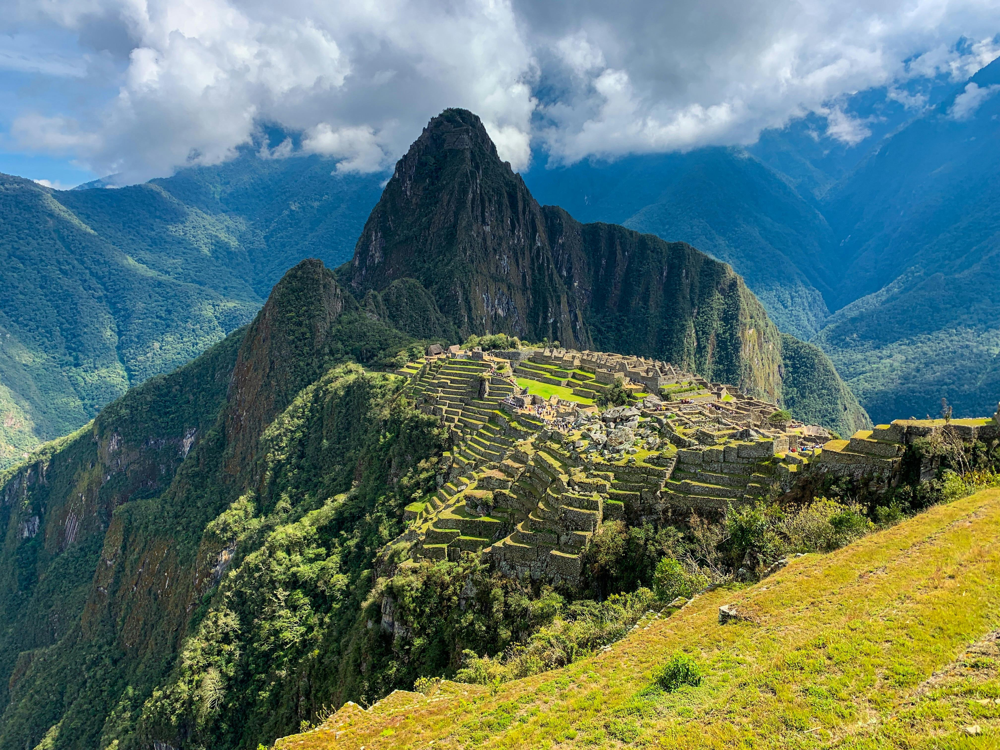

About Me
Hello, my name is Evelin. I am from Peru. I was born in Perú - Arequipa. I like to watch movies, read books, ride a bike and walk. I want to be a software developer. The thing That I really like about BYU-Idaho is the way of learning and teaching. It is different from what I experienced before. I have been a member of the Church of Jesus Christ of Latter Day Saints since I was a child (five years old). One of my favorite quotes is titled: 'Sunday Will Come' by Joseph B. Wirthlin, and he said: No matter our despair, no matter our sorrow, Sunday will come. In this life or the next, Sunday will come. This quote helped me a lot in my mission and helps me a lot in my life. Thanks.
Perú
"Perú, nestled in the heart of South America, boasts a diverse tapestry of landscapes ranging from the rugged Andes Mountains to the lush Amazon rainforest. Its rich cultural heritage, evident in the ancient ruins of Machu Picchu and colonial architecture of Lima, captivates travelers from around the globe. With its vibrant cuisine, vibrant markets, and warm hospitality, Peru offers an unforgettable journey filled with adventure, history, and natural beauty."